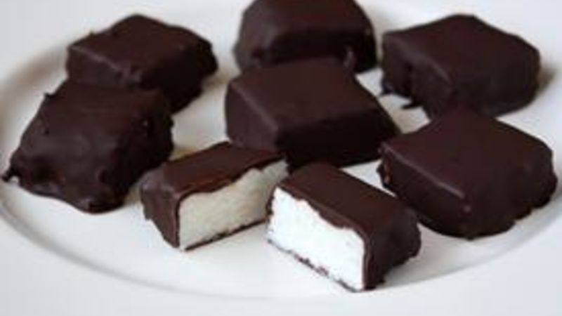

Needhams

Description
The surprisingly delicious chocolate and coconut candy-with a Maine twist!
Ingredients
- 3/4 cup mashed potatoes (unseasoned)
- 1/2 teaspoon salt
- 2 lbs confectioners' sugar
- 1/2 cup butter
- 14 oz flaked coconut
- 2 tsp vanilla
- 12 oz semisweet chocolate chips
- 4 unsweetened chocolate squares
- 1/2 paraffin wax block
Steps
- Pare, cook, and mash potato
- Add salt
- Melt butter in top of double boiler
-
Add mashed potato, confectioner' sugar, flaked coconut, and vanilla
to double boiler
- Mix well and turn into buttered jelly roll pan. Spread evenly.
- Place in a cool place to harden.
- When hard, cut into small squares.
- Place paraffin in the top of a double boiler and allow to melt
- Add both types of chocolate and melt into the paraffin.
- Stir well to mix ingredients.
-
Dip squares into the paraffin mixture and allow excess to drip before
dropping onto wax paper.
- Allow chocolates to cool and set.